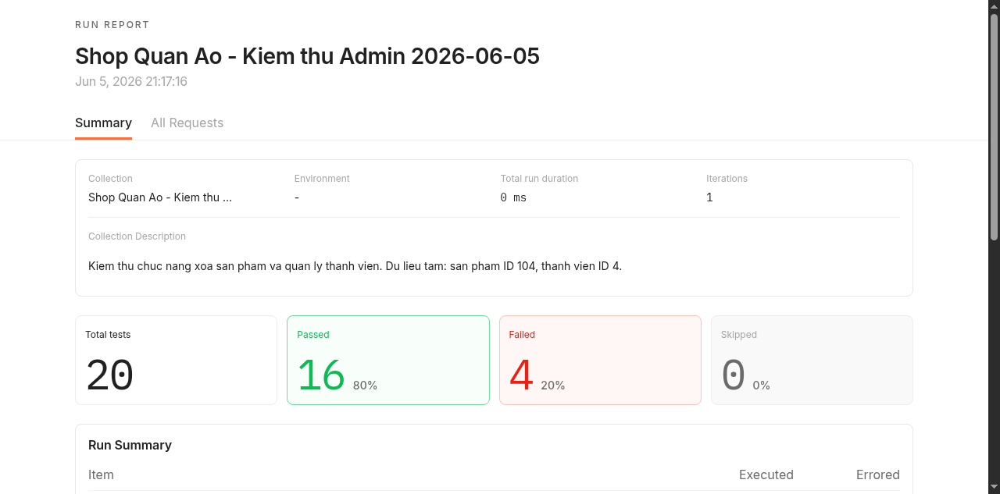
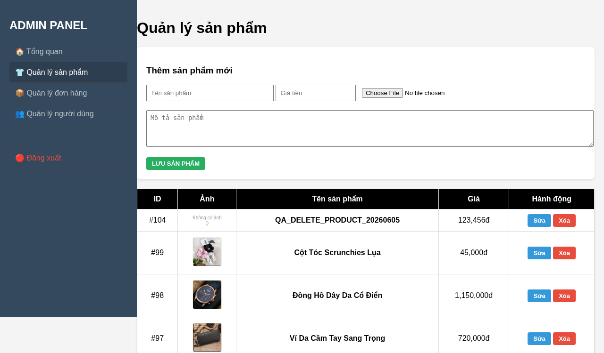
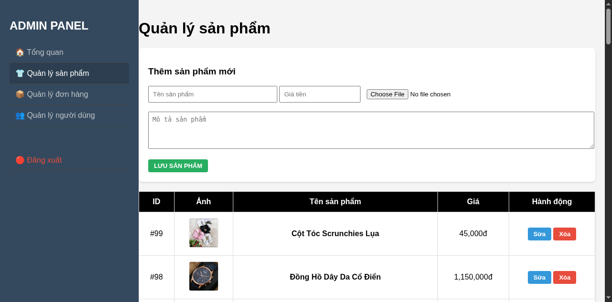
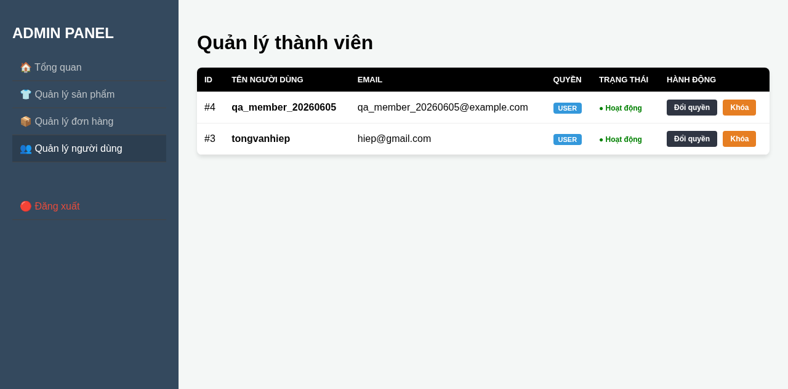
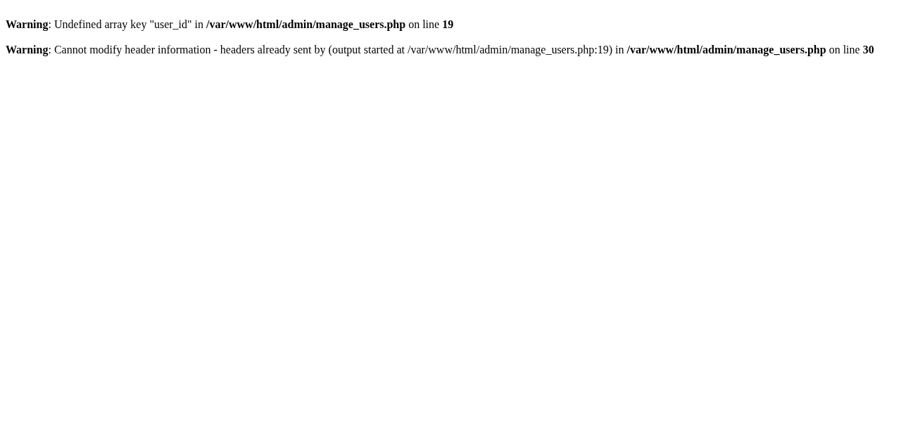
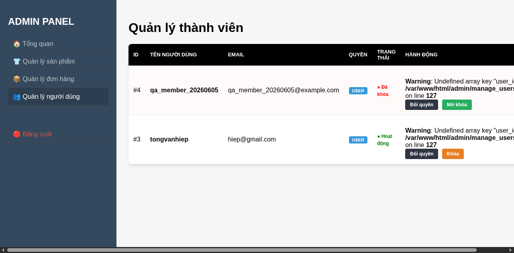
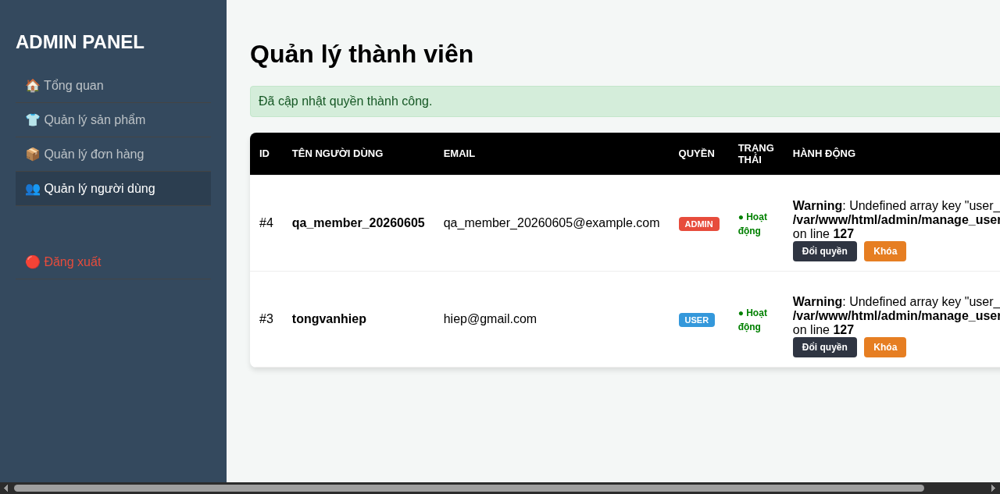
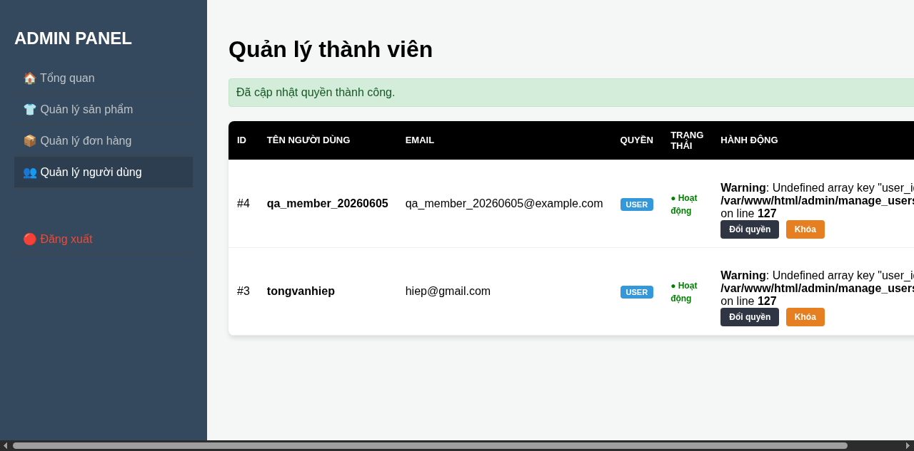

Project Shop Quần Áo
| Ngày kiểm thử | 05/06/2026, múi giờ Asia/Ho_Chi_Minh |
| Hệ thống kiểm thử | http://localhost:8080, Docker PHP/Apache và MariaDB |
| Tài khoản | Admin (thông tin đăng nhập do người dùng cung cấp) |
| Phạm vi | Xóa sản phẩm; quản lý thành viên: khóa, mở khóa, đổi quyền |
| Dữ liệu tạm | Sản phẩm ID 104, tên QA_DELETE_PRODUCT_20260605; thành viên ID 4, tên qa_member_20260605 |
| Công cụ | Postman CLI 1.38.1, Postman Cloud, trình duyệt tự động và truy vấn MariaDB để đối chiếu |
| Collection | Request | Assertion | Đạt | Không đạt |
|---|---|---|---|---|
| Shop Quan Ao - Kiem thu Admin 2026-06-05 | 10/10 đã thực thi | 20 | 16 (80%) | 4 (20%) |
Collection: https://go.postman.co/collection/55518061-056fb80d-77ec-493a-9428-c454f607d8d6
Postman Cloud Run: https://go.postman.co/workspace/900b3729-79b8-4488-8057-db91c99a46a8/run/55518061-45640c2c-a8e1-4228-bdc3-58b5aeab7aeb
| STT | Dữ liệu test | Kết quả mong muốn | Kết quả thực tế |
|---|---|---|---|
| 1 | Chưa đăng nhập; gửi GET /admin/manage_products.php. |
Không cho truy cập trang quản trị; trả về HTTP 302 và chuyển đến trang đăng nhập. | ĐẠT. HTTP 302, header Location trỏ đến ../login.php. Hai assertion Postman đạt. |
| 2 | Đăng nhập admin; mở danh sách sản phẩm. Dữ liệu cần tìm: ID 104, QA_DELETE_PRODUCT_20260605, giá 123.456đ. |
Trang tải thành công và hiển thị đúng sản phẩm kiểm thử trước khi xóa. | ĐẠT. HTTP 200; Postman và giao diện đều tìm thấy sản phẩm ID 104 trước thao tác. |
| 3 | Gửi GET /admin/manage_products.php?delete_id=104 bằng session admin. |
Xóa sản phẩm; sau redirect, sản phẩm không còn trong danh sách và database. | ĐẠT. Sau redirect trả HTTP 200; tên sản phẩm không còn trong HTML. Đối chiếu database: COUNT(*) WHERE id=104 = 0. Giao diện bắt đầu từ ID 99. |
| 4 | Gửi xóa ID không tồn tại: delete_id=999999. |
Không phát sinh lỗi server; danh sách sản phẩm vẫn hoạt động và sản phẩm đã xóa không xuất hiện lại. | ĐẠT. HTTP 200 sau redirect, trang quản lý sản phẩm hiển thị bình thường, không có dữ liệu ID 104. |
| STT | Dữ liệu test | Kết quả mong muốn | Kết quả thực tế |
|---|---|---|---|
| 1 | Mở danh sách thành viên bằng session admin; kiểm tra ID 4, qa_member_20260605. |
Hiển thị thành viên với quyền USER, trạng thái Hoạt động và giao diện không có lỗi PHP. | ĐẠT MỘT PHẦN. Dữ liệu USER/Hoạt động hiển thị đúng và ba assertion đạt, nhưng giao diện xuất hiện cảnh báo Undefined array key "user_id" tại dòng 127. |
| 2 | Khóa thành viên: GET /admin/manage_users.php?action=lock&id=4. |
Cập nhật trạng thái thành Đã khóa, redirect về danh sách và hiển thị thông báo “Đã khóa tài khoản thành công.” | KHÔNG ĐẠT. Database được cập nhật và khi mở lại danh sách, trạng thái là Đã khóa. Tuy nhiên response chỉ chứa hai PHP warning, không redirect, không có thông báo thành công; 2 assertion Postman thất bại. |
| 3 | Mở khóa thành viên: GET /admin/manage_users.php?action=unlock&id=4. |
Cập nhật trạng thái thành Hoạt động, redirect về danh sách và hiển thị thông báo “Đã mở khóa tài khoản thành công.” | KHÔNG ĐẠT. Database được cập nhật về Hoạt động, nhưng response tiếp tục chỉ chứa PHP warning và không redirect; 2 assertion Postman thất bại. |
| 4 | Đổi quyền thành viên ID 4 từ USER sang ADMIN: toggle_role=admin. |
Quyền đổi thành ADMIN; redirect và hiển thị thông báo cập nhật thành công. | ĐẠT CÓ CẢNH BÁO. Hai assertion Postman đạt, quyền ADMIN và thông báo thành công hiển thị đúng. Giao diện vẫn có warning user_id tại dòng 127. |
| 5 | Khôi phục quyền thành viên ID 4 từ ADMIN về USER: toggle_role=user. |
Quyền trở lại USER, trạng thái Hoạt động; dữ liệu kiểm thử được khôi phục sau khi chạy. | ĐẠT CÓ CẢNH BÁO. Hai assertion đạt. Đối chiếu cuối: role=user, status=1. Giao diện vẫn hiển thị warning tại dòng 127. |
Mã lỗi: DEF-ADMIN-USER-01
Mức độ: Cao đối với luồng khóa/mở khóa.
Vị trí: admin/manage_users.php, dòng 19 và dòng 127.
Nguyên nhân: Luồng đăng nhập admin chỉ gán admin_logged_in và role, không gán $_SESSION['user_id']. Trang quản lý người dùng đọc trực tiếp khóa session này.
Ảnh hưởng: Cảnh báo được xuất ra trước lệnh header(), dẫn đến lỗi “Cannot modify header information”. Khóa/mở khóa vẫn thay đổi database nhưng người dùng không được redirect hoặc nhận thông báo thành công.

Hình 1. Postman Run Report: 20 assertion, 16 đạt, 4 không đạt.

Hình 2. Trước kiểm thử: sản phẩm ID 104 xuất hiện đầu danh sách.

Hình 3. Sau kiểm thử: ID 104 không còn; danh sách bắt đầu từ ID 99.

Hình 4. Trạng thái ban đầu: thành viên ID 4 là USER và Hoạt động.

Hình 5. Response khi khóa: warning user_id và lỗi không thể gửi header redirect.

Hình 6. Mở lại danh sách cho thấy database đã đổi trạng thái thành Đã khóa, đồng thời warning vẫn xuất hiện trên giao diện.

Hình 7. Đổi quyền sang ADMIN thành công nhưng warning user_id vẫn còn.

Hình 8. Trạng thái cuối: thành viên được khôi phục về USER và Hoạt động.
Xóa sản phẩm: đạt toàn bộ các ca kiểm thử đã thực hiện.
Quản lý thành viên: thay đổi dữ liệu hoạt động, nhưng luồng khóa/mở khóa không đạt về response và trải nghiệm giao diện do thiếu $_SESSION['user_id']. Luồng đổi quyền hoạt động nhưng trang vẫn hiển thị PHP warning.
Trạng thái dữ liệu cuối: sản phẩm kiểm thử ID 104 đã bị xóa theo yêu cầu; thành viên ID 4 đã được khôi phục về quyền USER và trạng thái Hoạt động.